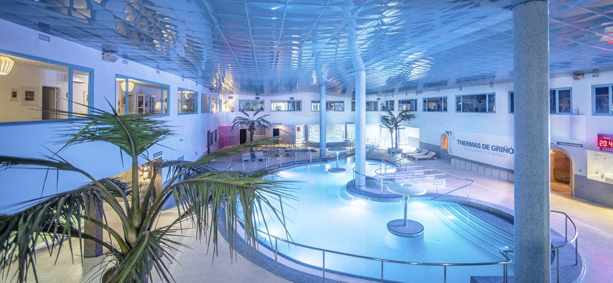
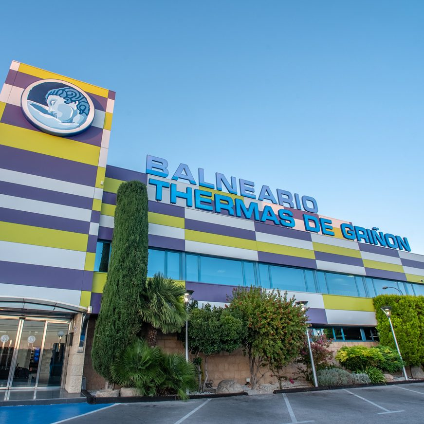

Vale regalo online
Para Roberta & Anastasia

Vale regalo online
Thermas de GriñónFeliz 18 cumpleaños
El lugar
Está en Griñón, al sur de Madrid. Por dentro es un circuito termal enorme, con espacios ozonizados que se recorren a vuestro ritmo: piscinas con chorros, jacuzzis, saunas, baño turco, un flotarium y cuatro piscinas temáticas inspiradas en los mares.

El circuito termal
Quince zonas para ir de una a otra sin prisa. Estas son todas, con lo que tiene cada una.
La sauna no está recomendada para personas con hipertensión, problemas circulatorios o cardiacos, ni para embarazadas.
Cómo llegar